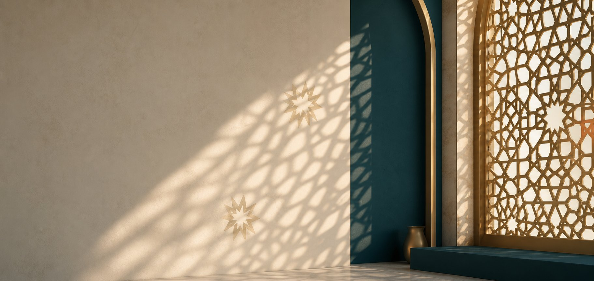
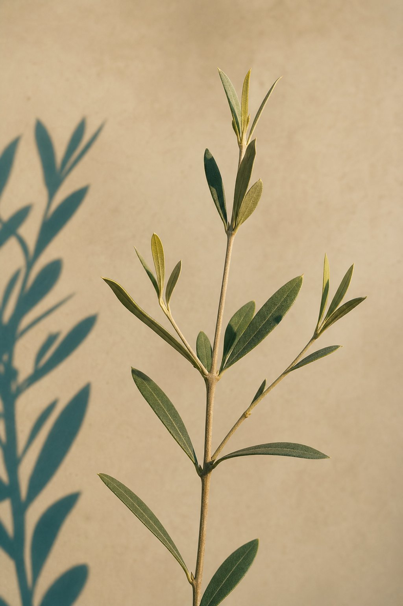
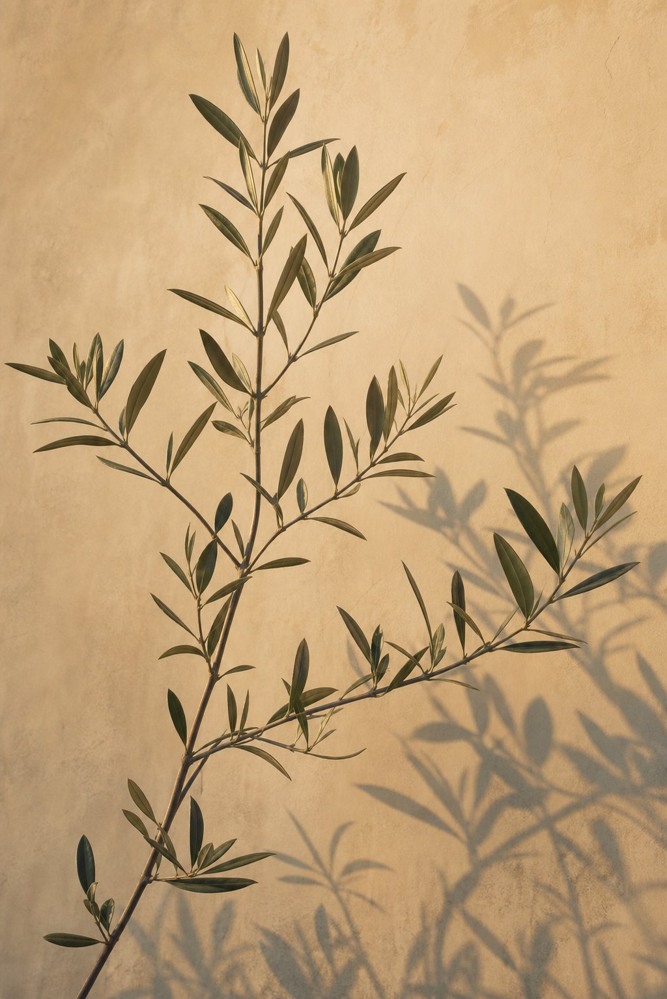
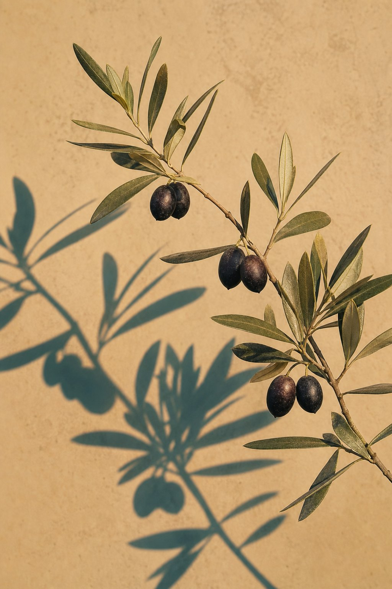

Free Lectures
No cost
Open lectures, Quranic studies and community services, all offered free.
- Ma'ani-ul-Quran (short Tafseer)
- Tajweed & Dawra-e-Quran
- Open Lectures & community Circles
Healing the Mind • Nurturing the Soul
Accessible, high-quality education for the heart and the mind, bringing research-based behavioural science together with the wisdom of the Quran and Sunnah.

Drop into an open lecture, commit to a full course, or learn closely in a small group. There is a place for you either way.
Open lectures, Quranic studies and community services, all offered free.
Affordable workshops and masterclasses, priced so that cost is never the barrier.
Learn in a small group online, live and interactive, with personal attention and accountability.
A short Tafseer of the Quran that connects universal Quranic messages to everyday life.
Join for freeA detailed, verse-by-verse Tafseer for students who want to go deeper into the Book of Allah.
Join for freeAn in-depth, long-term foundational study of the life of the Prophet ﷺ.
Join for freeFoundational Arabic grammar so you can engage directly with the Quran and classical texts.
Join for freePractical rulings on prayer and purification for correct, confident daily practice.
Join for freeBi-weekly online spiritual healing for physical, emotional and spiritual ailments.
Join for free
True healing and lasting peace (Sakinah) are achieved only when our emotional intelligence is securely plugged into divine wisdom. The Four Bodies Approach holds the physical, mental, emotional and spiritual together, because you cannot heal one by ignoring the others.
Bi-weekly online spiritual healing for physical, emotional and spiritual ailments, conducted strictly according to the Quran and Sunnah.
Tafseer, short and long, and the Ramzan Dawra-e-Quran are offered free of charge, as are Thematic study, Fiqh and the Seerah series.
One-to-one support, free of cost, incorporating NLP-based Time Line Therapy to help release past emotional blocks.

For teenagers and young adults: tools to build resilience and discover true identity in a noisy world.

For mid-life women: frameworks to balance the heavy, beautiful responsibilities of family, habits and relationships.

For women 50+: step into the most impactful chapter. Redefine purpose, share wisdom, and leave a beautiful mark.
“Wherever you find yourself today, your path to healing the mind and nurturing the soul begins here.” Find your true Sakinah with us